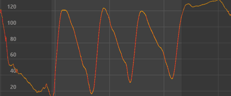
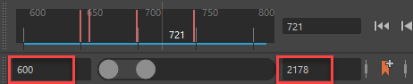
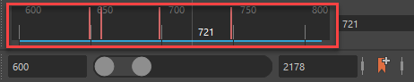

- 在“曲线图编辑器”(Graph Editor)的“曲线”(Curves)菜单中，选择“钳制曲线”(Clamp Curve) >


将曲线钳制到上限和下限
- 时间范围(Time Range)
- 用于定义曲线动画的移动范围。
-
- 全部(All)
- 钳制曲线上的所有动画，包括负帧或超过时间滑块(Time Slider)或范围滑块(Range Slider)的“动画结束时间”(Animation End Time)中显示的帧。
- 帧(Frame)
-
钳制由范围滑块(Range Slider)的动画开始时间和动画结束时间字段中的值定义的动画。
- 播放(Playback)
-
钳制由时间滑块(Time Slider)中显示的范围定义的动画。
- 自定义(Custom)
- 将定义的动画钳制到由“钳制帧”(Clamp frames)设置定义的范围。
- 钳制帧(Clamp Frames)
- 选择帧的类型。
-
- 上限
- 按“偏移帧”(Offset Frames)字段中的帧数移动选定动画。
- 下限
- 将选定动画移动到在“偏移帧”(Offset Frames)字段中设置的帧编号